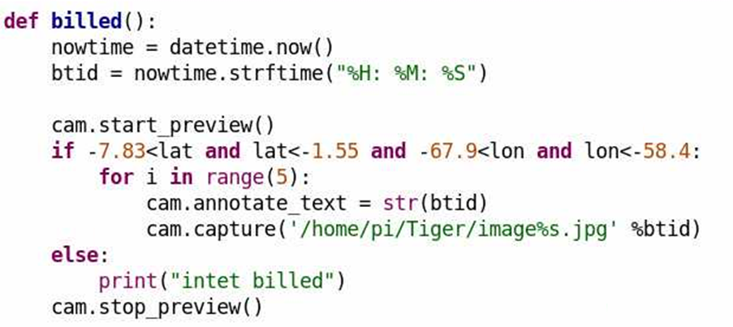
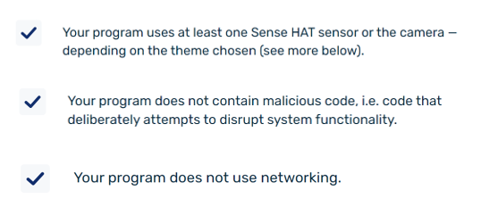
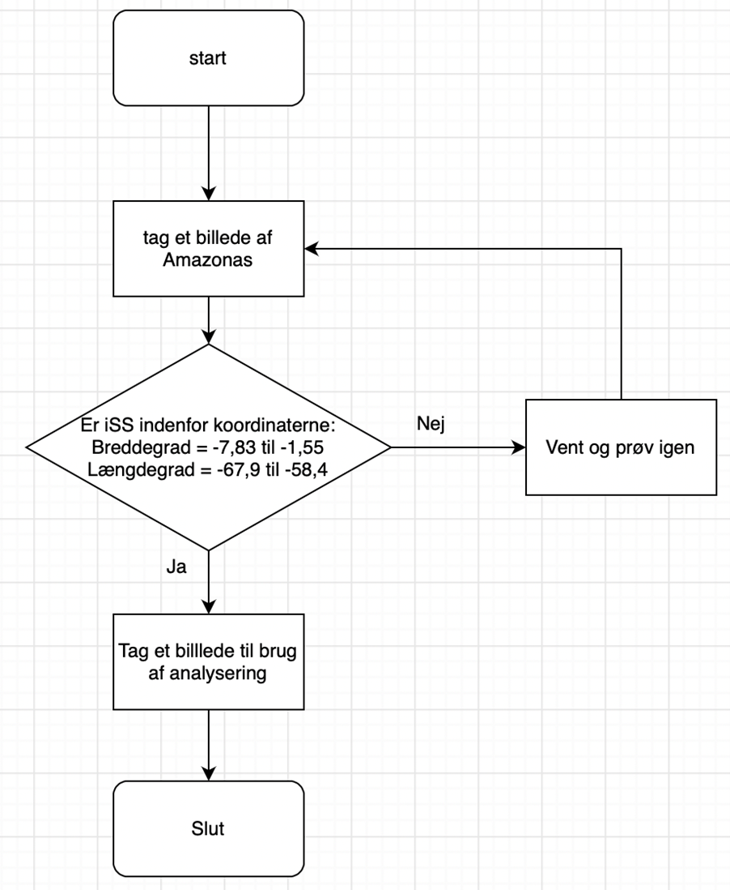

Jeg har lavet dette projekt i samarbejde med Wilma, Sara og Matilde 2021y.
Link til vores programkode:
Programkode
Projektbeskrivelse:
Vi vil gerne undersøge hvordan planter har det i to forskellige skove som er placeret to forskellige steder på kloden. For at gøre dette vil vi bruge et infrarødt kamera som vil kunne fortælle om planterne befinder sig i et godt eller dårligt miljø. Vi benytter et infrarødt kamera, da det kan vise hvor meget nær infrarød stråling planterne udsender. Dette indikerer densiteten og helbredet af planterne i det givne område. Til slut vil vi sammenligne de to skove og se hvilken destination der er mest optimal for planter at leve i.Gennemgang af ESA’s specifikationer og en vurdering af hvilke rammer det sætter for jeres projekt:
ESA har en masse forskellige specifikationer som ens projekt skal være indenfor. En af disse er, at det skal være et videnskabeligt projekt og ikke et spil. Dette har vi opfyldt ved at undersøge planters levestandarder i et spesefikt område, nemlig Amazonas, hvilket er videnskabeligt og ikke er et spil. Et andet krav er, at forsøget ikke skal afhænge af en specifik begivenhed som muligvis ikke vil finde sted i løbet af de tre timer. Dette lever vores projekt op til, da forsøget ikke afhænger af nogen specifik begivenhed for at kunne finde sted. Et andet krav er, at forsøget ikke må kræve yderligere udstyr eller adgang til noget andet på ISS, hvilket vores projekt lever op til da der ikke er behov for noget andet til at udføre vores forsøg.Beskrivelse af sensor:
Dataen vi vil samle er billeder af to forskellige skove med et NDVI-filter. NDVI-filteret er et vegetationsindeks, som indikerer planternes sundhed baseret på, hvordan planter udsender bestemte bølgelængder i det elektromagnetiske spektrum. Det er cellestrukturen i planterne som udsender nær-infrarød stråling, hvilket betyder at når planterne udfører fotosyntese, og de dermed vokser, vil planterne indeholde flere cellestrukturer. Dette betyder at sunde planter udsender mere NIR end planter som ikke trives. Ved at tage billeder af to forskellige skove vil man derved kunne bestemme hvilket sted planterne trives bedst.Gennemgang af relevante kodestumper:
Denne kode bruges til, at tage billeder af vores valgte destination Amazonas. Dette gøres ved at lave et "if-statement" (ses i linje 6). Her har vi fundet Amazonas bredde- og længdegrad og tilføjer vi, at hvis ISS er indenfor Amazonas bredde- og længdegrader, så skal den tage et billede. I linje 10 har vi lavet et "else-statement", der fortæller, at hvis ISS ikke er indenfor Amazonas bredde- og længdegrader, så skal der IKKE tages et billede.
Grundig beskrivelse af test måling af mindst en måling:
Den første testmåling af ISS IKKE over Amazonas:Det første udkom af testmålingerne er hvis ISS-sensoren ikke er over Amazones. I dette tilfælde vil den måle længde- og breddegrad af sensorens lokation og hvor højt over jorden den befinder sig. Ud fra dette ved den, om den er indenfor det givne område, nemlig Amazonas, og når den ikke er det, som i dette tilfælde, så tager den ikke et billede og siger “intet billed”.

Den anden testmåling af ISS OVER Amazonas:

Det andet udkom af testmålingerne er hvis ISS-sensoren er over Amazonoz. I dette tilfælde vil den igen måle længde- og breddegrad af sensorens lokation og hvor højt over jorden den befinder sig. Den vil igen ud fra dette vide om den er indenfor det givne område, nemlig Amazonas, og når den er det, som i dette tilfælde, så tager den et billede, som ligger vedhæftet nedenfor. Det er et billede af vinduet i klasselokalet.

Vurdering af om vores kode lever op til ESA’s kravspecifikationer:
Vi har udvalgt 3 af ESA’s kravspecifikationer, som vores kode lever op til.
Flowchart af vores programkode:
